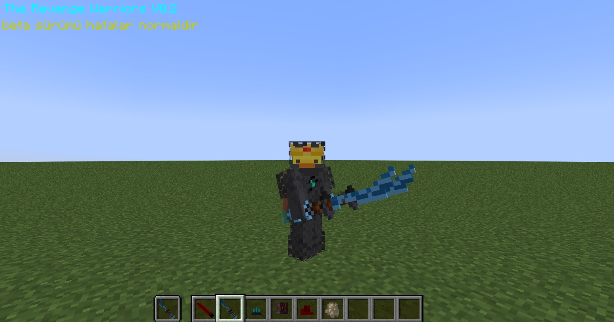

Proje Hakkında
GG Forge, Minecraft deneyiminizi zorlaştırmak ve görselleştirmek için geliştirilen içeriklerin toplandığı merkezdir. Burada hem "The Revenge Warriors" modunu hem de özel doku paketlerini bulabilirsiniz.

⚙️
Minecraft Modları
Oyun mekaniklerini değiştiren, yeni kılıçlar ve yaratıklar ekleyen modlar.
| Dosya Adı | MC Sürümü | Kategori | Tarih | İndir |
|---|---|---|---|---|
| The Revenge Warriors v0.3 | 1.19.2 | Forge Mod Beta | 04.11.2025 | İndir |
| The Revenge Warriors v0.2 | 1.19.2 | Forge Mod Beta | 02.11.2025 | İndir |
| The Revenge Warriors v0.1 | 1.19.2 | Forge Mod Beta | 01.11.2025 | İndir |
🎨
Doku Paketleri (Resource Packs)
Oyunun görünümünü değiştiren, GUI ve blok tasarımları.
| Dosya Adı | MC Sürümü | Kategori | Tarih | İndir |
|---|---|---|---|---|
| GG Games UI Pack v1.2 | 1.21.8 | Texture Pack Test | 27.01.2026 | İndir |